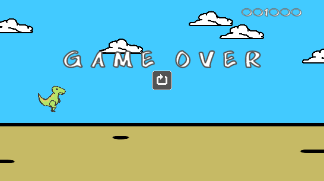
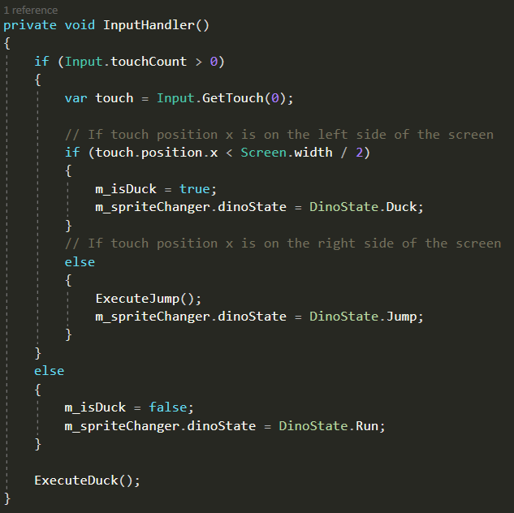
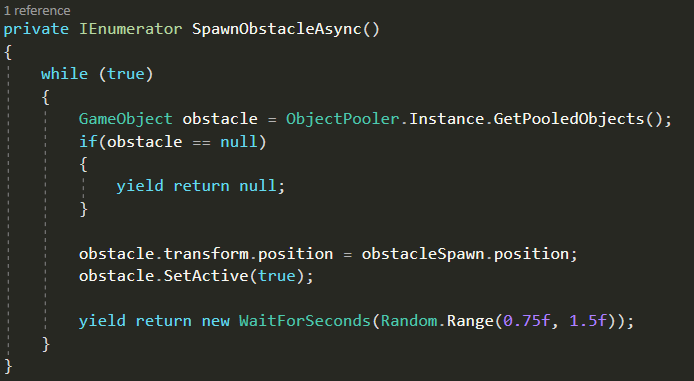

Google Dino
A remake of the simple Google Dino game.

The Project
My internet dropped constantly, I could not normally play video games without losing internet connection. And everytime you try to acces the browser without internet, you can play the little game where you a dinosaur and need to dodge birds and cactussus. And I thought; well, why not remaking this game. It's simple but funny. So that is what I did. I recreated the Google Dino game.
What have I learnt?
I have learned how to make a game for the mobile device. Other then that, I saw it as a very simple challenge, to make a game in a weekend.
Languages & Information
- Languages: C#
- Software: Unity and Visual Studio
- Version control: GitHub
Screenshots and Videos


